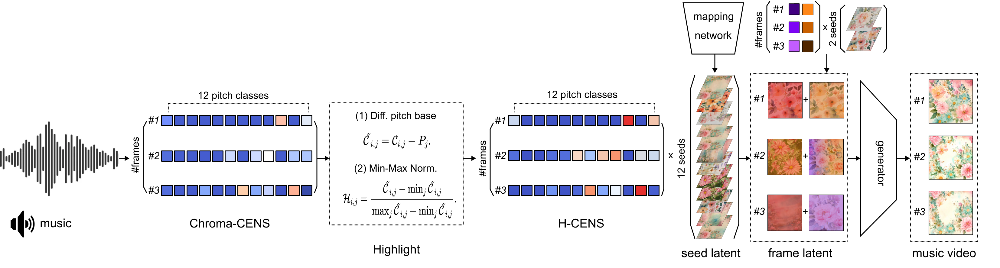

<!DOCTYPE html>
<html>
<head>
  <meta charset="utf-8">
  <!-- Meta tags for social media banners, these should be filled in appropriatly as they are your "business card" -->
  <!-- Replace the content tag with appropriate information -->
  <meta name="description" content="DESCRIPTION META TAG">
  <meta property="og:title" content="SOCIAL MEDIA TITLE TAG"/>
  <meta property="og:description" content="SOCIAL MEDIA DESCRIPTION TAG TAG"/>
  <meta property="og:url" content="URL OF THE WEBSITE"/>
  <!-- Path to banner image, should be in the path listed below. Optimal dimenssions are 1200X630-->
  <meta property="og:image" content="static/image/your_banner_image.png" />
  <meta property="og:image:width" content="1200"/>
  <meta property="og:image:height" content="630"/>


  <meta name="twitter:title" content="TWITTER BANNER TITLE META TAG">
  <meta name="twitter:description" content="TWITTER BANNER DESCRIPTION META TAG">
  <!-- Path to banner image, should be in the path listed below. Optimal dimenssions are 1200X600-->
  <meta name="twitter:image" content="static/images/your_twitter_banner_image.png">
  <meta name="twitter:card" content="summary_large_image">
  <!-- Keywords for your paper to be indexed by-->
  <meta name="keywords" content="KEYWORDS SHOULD BE PLACED HERE">
  <meta name="viewport" content="width=device-width, initial-scale=1">


  <title>Music Reactive Video Generation</title>
  <link rel="icon" type="image/x-icon" href="static/images/favicon.ico">
  <link href="https://fonts.googleapis.com/css?family=Google+Sans|Noto+Sans|Castoro"
  rel="stylesheet">

  <link rel="stylesheet" href="static/css/bulma.min.css">
  <link rel="stylesheet" href="static/css/bulma-carousel.min.css">
  <link rel="stylesheet" href="static/css/bulma-slider.min.css">
  <link rel="stylesheet" href="static/css/fontawesome.all.min.css">
  <link rel="stylesheet"
  href="https://cdn.jsdelivr.net/gh/jpswalsh/academicons@1/css/academicons.min.css">
  <link rel="stylesheet" href="static/css/index.css">
  <link rel="stylesheet" href="https://unpkg.com/swiper/swiper-bundle.min.css"/>

  <script src="https://ajax.googleapis.com/ajax/libs/jquery/3.5.1/jquery.min.js"></script>
  <script src="https://documentcloud.adobe.com/view-sdk/main.js"></script>
  <script defer src="static/js/fontawesome.all.min.js"></script>
  <script src="static/js/bulma-carousel.min.js"></script>
  <script src="static/js/bulma-slider.min.js"></script>
  <script src="static/js/index.js"></script>
  <script src="https://unpkg.com/swiper/swiper-bundle.min.js"></script>
  <script>
    document.addEventListener("DOMContentLoaded", function () {
      var mySwiper = new Swiper(".swiper-container", {
        slidesPerView: 3,
        slidesPerGroup: 1,
        spaceBetween: 24,
        navigation: {
          nextEl: ".swiper-button-next",
          prevEl: ".swiper-button-prev",
        },
        breakpoints: {
          1280: {
            slidesPerView: 3,
            slidesPerGroup: 3,
          },
          720: {
            slidesPerView: 1,
            slidesPerGroup: 1,
          },
        },
      });
  
      // YouTube API 초기화가 끝난 후 Swiper 슬라이더를 다시 렌더링
      onYouTubeIframeAPIReady();
    });
  
    var players = [];
    var youtube_id_list = [
      "HCeob3NlD9M", // Hypeboy
      "-qhX_-0rdcU", // Dash
      "Xm2eeFdv0Y8", // Samulnori
      "1-vu_3xscuA", // Hello I'm Innyeon
      "StLspnjgyyY", // Rock You Like A Hurricane
      "xkd-q7IUrRg", // Living On A Prayer
    ];
  
    // YouTube API 초기화
    function onYouTubeIframeAPIReady() {
      youtube_id_list.forEach(function (videoId, index) {
        players[index] = new YT.Player("player" + (index + 1), {
          videoId: videoId,
          playerVars: {
            modestbranding: 1,
            rel: 0,
            showinfo: 0,
          },
          events: {
            onReady: onPlayerReady,
          },
        });
      });
    }
  
    function onPlayerReady(event) {
      var initialVolume = document.getElementById("volumeControl").value;
      event.target.setVolume(initialVolume);
    }
  
    function setVolumeForAllPlayers(volume) {
      players.forEach(function (player) {
        if (player && typeof player.setVolume === 'function') {
          player.setVolume(volume);
        }
      });
    }
  
    document.getElementById("volumeControl").addEventListener("input", function () {
      var volume = this.value;
      setVolumeForAllPlayers(volume);
    });
  </script>
  
  <script>
    document.addEventListener('DOMContentLoaded', () => {
      // bulmaCarousel 초기화
      const carousels = bulmaCarousel.attach('#carousel-rock, #results-carousel', {
        slidesToScroll: 1,
        slidesToShow: 1,
        infinite: false,   // 무한 루프 비활성화
        autoplay: false,
        loop: false,       // 루프 비활성화
        navigation: true,
        pagination: true
      });
    // 슬라이드 복제 방지
    document.querySelectorAll('.slider-item[data-slider-index="2"], .slider-item[data-slider-index="3"], .slider-item[data-slider-index="4"]').forEach(slide => {
      slide.remove();
    });

      // 첫 번째와 마지막 슬라이드에서 버튼 비활성화
      function updateNavigationButtons(carousel) {
        const prevButton = carousel.element.querySelector('.slider-navigation-previous');
        const nextButton = carousel.element.querySelector('.slider-navigation-next');
        const totalSlides = carousel.element.querySelectorAll('.slider-item').length;
        const currentIndex = carousel.element.querySelector('.is-current').dataset.sliderIndex;

        // 첫 슬라이드에서는 왼쪽 버튼 비활성화
        if (currentIndex === '0') {
          prevButton.style.visibility = 'hidden';
        } else {
          prevButton.style.visibility = 'visible';
        }

        // 마지막 슬라이드 (index 1이 끝일 경우)에서는 오른쪽 버튼 비활성화
        if (parseInt(currentIndex) === totalSlides - 1) {
          nextButton.style.visibility = 'hidden';
        } else {
          nextButton.style.visibility = 'visible';
        }
      }


      // 각 슬라이더에 대해 버튼 업데이트 처리
      carousels.forEach(carousel => {
        carousel.on('slide:after', () => {
          updateNavigationButtons(carousel);
        });

        // 초기 버튼 상태 업데이트
        updateNavigationButtons(carousel);
      });
    });
</script>

  
  
</body>
</html>
</head>
<style>
body {
    background: url('static/images/1_sep_5.png') no-repeat fixed;
    background-size: cover; /* 화면에 꽉 차게 */
    background-attachment: fixed; /* 배경 고정 */
    background-repeat: no-repeat; /* 이미지 반복 방지 */
    height: 100%;
}

  .mybar {
    display: flex;
    flex-direction: row;
    flex-wrap: wrap;
    justify-content: center;
    align-content: center;
    align-items: center;
  }
  .mycontainer {
    display: block;
  }
  .myitem {
    margin: 0 auto;
  }
  .publication-video {
    width: 100%;
    height: auto;
  }
  .hero .teaser img {
    width: 900px !important;
    height: 500px !important;
    max-width: 100%;
    display: block;
    margin-left: auto;
    margin-right: auto;
  }
  .slider-page[data-index='2'], 
  .slider-page[data-index='3'] {
    display: none;
  }
  .slider-item h4.title.is-5, h2.title.is-3 {
    text-align: center;
    font-style: normal;

  }

  .swiper-slide h4.title.is-5, h3.title.is-4 {
    text-align: center;
    font-style: normal;

  }
/* 슬라이더 스타일 */
.swiper-container {
    position: relative; /* 슬라이더 내부에 버튼 위치를 조정하기 위해 relative */
    width: 100%;
    height: 300px;
    margin: 0 auto;
    overflow: hidden;
}

.swiper-button-next, .swiper-button-prev {
    width: 40px;
    height: 40px;
    background-color: white;
    border-radius: 50%;
    display: flex;
    justify-content: center;
    align-items: center;
    box-shadow: 0 2px 10px rgba(0, 0, 0, 0.2);
    position: absolute;
    top: 50%;
    transform: translateY(-50%);
    z-index: 10;
    cursor: pointer;
    transition: background-color 0.4s;
}

.swiper-button-next::before, .swiper-button-prev::before {
    content: '';
    display: inline-block;
    width: 0;
    height: 0;
    border-style: solid;
    border-width: 6px 0 6px 8px; /* 삼각형 모양 */
    border-color: transparent transparent transparent black; /* 화살표 색상 */
}

.swiper-button-next::before {
    transform: rotate(0deg); /* 오른쪽 화살표 */
}

.swiper-button-prev::before {
    transform: rotate(180deg); /* 왼쪽 화살표 */
}

.swiper-button-next:hover, .swiper-button-prev:hover {
    background-color: #333;
    color: #fff;
}

.swiper-button-next::after,
.swiper-button-prev::after {
  display: none;
}

/* 특정 클래스가 있는 섹션들만 간격을 줄임 */
section.hero.is-small.close-gap {
    margin-bottom: 0.5rem;  /* 섹션 사이의 마진을 줄임 */
    padding-top: 1rem;      /* 위쪽 패딩을 줄임 */
    padding-bottom: 1rem;   /* 아래쪽 패딩을 줄임 */
}


</style>
<body>

  <section class="hero">
    <div class="hero-body">
      <div class="container is-max-desktop">
        <div class="columns is-centered">
          <div class="column has-text-centered">
            <h1 class="title is-1 publication-title">Music Reactive Video Generation</h1>
            <div class="is-size-5 publication-authors">
              <!-- Paper authors -->
              <span class="author-block">
                <a href="https://github.com/tlsdmswn01" target="_blank">Eunjoo Shin</a>,</span>
                <span class="author-block">
                  <a href="https://github.com/hankyul2" target="_blank">Hankyul Kang</a>,</span>
                  <span class="author-block">
                    <a href="https://sites.google.com/view/jongbinryu/about-me" target="_blank">Jongbin Ryu</a>
                  </span>
                    <div class="publication-links">
                         <!-- Arxiv PDF link -->
                      <!-- <span class="link-block">
                        <a href="https://arxiv.org/pdf/<ARXIV PAPER ID>.pdf" target="_blank"
                        class="external-link button is-normal is-rounded is-dark">
                        <span class="icon">
                          <i class="fas fa-file-pdf"></i>
                        </span>
                        <span>Paper</span>
                      </a>
                    </span> -->

                    <!-- Supplementary PDF link -->
                    <!-- <span class="link-block">
                      <a href="static/pdfs/supplementary_material.pdf" target="_blank"
                      class="external-link button is-normal is-rounded is-dark">
                      <span class="icon">
                        <i class="fas fa-file-pdf"></i>
                      </span>
                      <span>Supplementary</span>
                    </a>
                  </span> -->

                  <!-- Github link -->
                  <span class="link-block">
                    <a href="https://github.com/Lab-LVM/MRVG" target="_blank"
                    class="external-link button is-normal is-rounded is-dark">
                    <span class="icon">
                      <i class="fab fa-github"></i>
                    </span>
                    <span>Code</span>
                  </a>
                </span>

                <!-- ArXiv abstract Link -->
                <!-- <span class="link-block">
                  <a href="https://arxiv.org/abs/<ARXIV PAPER ID>" target="_blank"
                  class="external-link button is-normal is-rounded is-dark">
                  <span class="icon">
                    <i class="ai ai-arxiv"></i>
                  </span>
                  <span>arXiv</span>
                </a>
              </span> -->
            </div>
          </div>
        </div>
      </div>
    </div>
  </div>
</section>


<!-- Teaser video-->
<section class="hero teaser">
    <div class="container is-max-desktop">
      <div class="hero-body">
        <!-- <video poster="" id="tree" autoplay controls muted loop height="100%"> -->
          <!-- Your video here -->
          <!-- <source src="static/videos/banner_video.mp4"
          type="video/mp4"> -->
        <!-- </video> -->
         
        <h2 class="subtitle has-text-centered">
          Schematic overview of our music reactive video generation framework.
        </h2>
        <div class="con/home/sinssinej7/MRVG/statictent has-text-justified">
          <p> We use our highlighting method to enhance climax information present in Chroma-CENS. Then, we combine the Highlighted CENS
            (H-CENS) with twelve seed latent images of flowers to generate the latent per frame. An audio-reactive video is generated by
            encoding the combined input of H-CENS and latent images. Since our H-CENS contains the emphasized features of climaxes,
            it leads to generating highly reactive videos
          </p>
      </div>
    </div>
  </section>
<!-- End teaser video -->

<!-- Paper abstract -->
<section class="section hero" style="background-color: transparent; border-top: 2px dashed #ccc; width: 66%; margin: 0 auto;">
  <div class="container is-max-desktop" style="background-color: transparent;">
    <div class="columns is-centered has-text-centered">
      <div class="column is-four-fifths">
        <h2 class="title is-3">Abstract</h2>
        <div class="con/home/sinssinej7/MRVG/statictent has-text-justified">
          <p>While generating music-reactive videos is an impor-tant task in real-world applications, it has been a challenging generation task. We argue that this challenge arises from three factors: 1) emotional feelings about music exist in a too-small region of the chromagram to transform it into a video, 2) evaluating the music-reactive generation task is fundamentally
              a subjective matter of individual humans, and thus, 3) applying
              metrics for quantitative measurement used in existing generative
              models is tricky. For these reasons, this paper introduces an
              efficient music-reactive video generation model and a metric
              for accurately evaluating generated music-reactive videos. For
              our music-reactive generation model, we present the highlighted
              chromagram approach to effectively represent musical struc-
              ture information (<em>e.g.</em>, melody, beat, rhythm) in videos. We
              also introduce a quantitative measurement metric, Beat Co-
              occurrence, which is strongly correlated with human survey
              results. Our experiments demonstrate that our music-reactive
              generation model performs favorably in human surveys and the
              proposed Beat Co-occurrence distance metric. 
          </p>
        </div>
      </div>
    </div>
  </div>
</section>
<!-- End paper abstract -->


<!-- Youtube carousel -->
<section class="hero is-small">
  <div class="hero-body" style="border-top: 2px dashed #ccc; width: 66%; margin: 0 auto;">
    <div class="container is-max-desktop">
      <h2 class="title is-3">Music-Reactive Video Generation Comparison</h2>
      <div class="content has-text-justified">
        <p style="font-style: normal;">
          We generate music-reactive videos across three different genres 
          (<em>i.e.</em>, Rock, K-POP, Traditional Instrumental Ensemble) 
          and compare Chroma-CENS with our H-CENS method. In our comparison 
          study, we observed that while videos generated using 
          Chroma-CENS play smoothly, peak signals, such as musical climaxes, 
          are diluted, resulting in less distinct responsiveness to the music. 
          Conversely, videos generated using H-CENS better preserve and 
          emphasize these climaxes, leading to more accurate and natural visual responses. As a result, we found that H-CENS more effectively captures subtle musical changes and emotional nuances, facilitating a dynamic interaction between the music and visual elements, and conveying the emotional characteristics of the music more clearly to the viewers.
        </p>
      </div>
    </div>
  </div>
</section>

<section class="hero is-small">
  <div class="hero-body" style="border-top: 2px dashed #ccc; width: 66%; margin: 0 auto;">
    <div class="container is-max-desktop">
      <div style="text-align: center;">
        <p>*Please adjust the volume to suit your computer's sound settings.*</p>
      </div>
      <div class="mybar">
        <div>
          
        </div>
        <input style="margin: 1em; width: 10em;" type="range" id="volumeControl" min="0" max="100" value="50" step="1" oninput="setVolume(this.value)">
      </div>

      <h2 class="title is-3">Genre 1: K-POP</h2>
      <div id="results-carousel" class="carousel results-carousel">
        <div class="slider-container" style="opacity: 1; width: 1920px; transition: 300ms; transform: translate3d(0px, 0px, 0px);">
        
          <!-- 첫 번째 슬라이드 -->
          <div class="slider-item is-current" data-slider-index="0" style="width: 960px;height: 620px">
            <h4 class="title is-5">Song Title: "Hypeboy"</h4>
            <div class="video-container">
              <iframe width="560" height="315" src="https://youtube.com/embed/HCeob3NlD9M?feature=share" frameborder="0" allowfullscreen></iframe>
              <div id="player1"></div>
            </div>
          </div>
          
          <!-- 두 번째 슬라이드 -->
          <div class="slider-item" data-slider-index="1" style="width: 960px;height: 620px">
            <h4 class="title is-5">Song Title: "Dash"</h4>
            <div class="video-container">
              <iframe width="560" height="315" src="https://youtube.com/embed/-qhX_-0rdcU?feature=share" frameborder="0" allowfullscreen></iframe>
              <div id="player2"></div>
            </div>
          </div>

        </div>
        <div class="slider-navigation-previous"></div>
        <div class="slider-navigation-next"></div>
        <div class="slider-pagination"></div>

      </div>
    </div>
  </div>
</section>


<section class="hero is-small">
  <div class="hero-body" style="border-top: 2px dashed #ccc; width: 66%; margin: 0 auto;">
    <div class="container is-max-desktop" >
      <h2 class="title is-3">Genre 2: Traditional Instrumental Ensemble</h2>
      <div id="results-carousel" class="carousel results-carousel">
        <div class="slider-container" style="opacity: 1; width: 1920px; transition: 300ms; transform: translate3d(0px, 0px, 0px);">
       <!-- 첫 번째 슬라이드 -->
        <div class="slider-item is-current" data-slider-index="0" style="width: 960px;height: 620px">
          <h4 class="title is-5">Song Title: "Samulnori"</h4>
          <div class="video-container">
            <iframe width="560" height="315" src="https://youtube.com/embed/Xm2eeFdv0Y8?feature=share" 
                    frameborder="0" allow="accelerometer; autoplay; clipboard-write; encrypted-media; gyroscope; picture-in-picture" 
                    allowfullscreen></iframe>
            <div id="player3"></div>

          </div>
        </div>
        
        <!-- 두 번째 슬라이드 -->
        <div class="slider-item" data-slider-index="1" style="width: 960px;height: 620px">
          <h4 class="title is-5">Song Title: "Hello I'm Innyeon"</h4>
          <div class="video-container">
            <iframe width="560" height="315" src="https://youtube.com/embed/1-vu_3xscuA?feature=share"
                    frameborder="0" allow="accelerometer; autoplay; clipboard-write; encrypted-media; gyroscope; picture-in-picture" 
                    allowfullscreen></iframe>
            <div id="player4"></div>

          </div>
        </div>

        </div>
        <div class="slider-navigation-previous"></div>
        <div class="slider-navigation-next"></div>
        <div class="slider-pagination"></div>
      </div>
    </div>
  </div>
</section>

<section class="hero is-small">
  <div class="hero-body" style="border-top: 2px dashed #ccc; width: 66%; margin: 0 auto;">
    <div class="container is-max-desktop">
      <h2 class="title is-3">Genre 3: Rock</h2>
      <div id="carousel-rock" class="carousel results-carousel">
      
        <div class="slider-container" style="opacity: 1; width: 1920px; transition: 300ms; transform: translate3d(0px, 0px, 0px);">
          
          <!-- 첫 번째 슬라이드 -->
          <div class="slider-item is-current" data-slider-index="0" style="width: 960px;height: 620px">
            <h4 class="title is-5">Song Title: "Rock You Like A Hurricane"</h4>
            <div class="video-container">
              <iframe width="560" height="315" src="https://youtube.com/embed/StLspnjgyyY?feature=share" frameborder="0" allowfullscreen></iframe>
              <div id="player5"></div>
            </div>
          </div>
          
          <!-- 두 번째 슬라이드 -->
          <div class="slider-item " data-slider-index="1" style="width: 960px;height: 620px">
            <h4 class="title is-5">Song Title: "Living On A Prayer"</h4>
            <div class="video-container">
              <iframe width="560" height="315" src="https://youtube.com/embed/xkd-q7IUrRg?feature=share" frameborder="0" allowfullscreen></iframe>
              <div id="player6"></div>
            </div>
          </div>
        
      
        </div>
        <div class="slider-navigation-previous"></div>
        <div class="slider-navigation-next"></div>      
        <div class="slider-pagination"></div>
      </div>
    </div>
  </div>
</section>

<section class="hero is-small">
  <div class="hero-body" style="border-top: 2px dashed #ccc; width: 66%; margin: 0 auto;">
    <div class="container is-max-desktop">
      <h2 class="title is-3">Music-Reactive Video Generation with H-CENS</h4>
      <b>
      <h2 class="title is-3">Genre1 : K-POP</h4>

      <div class="swiper-container">
        <div class="swiper-wrapper">
          <div class="swiper-slide">
            <h4 class="title is-5">Heya</h4>
            <iframe width="100%" height="150" src="https://youtube.com/embed/uGW1x527fUw?feature=share" frameborder="0" allowfullscreen></iframe>
          </div>
          <div class="swiper-slide">
            <h4 class="title is-5">Supernatural</h4>
            <iframe width="100%" height="150" src="https://youtube.com/embed/QEuKJhw5Tww?feature=share" frameborder="0" allowfullscreen></iframe>

          </div>
          <div class="swiper-slide">
            <h4 class="title is-5">Small girl</h4>
            <iframe width="100%" height="150" src="https://youtube.com/embed/vbn7HBiWTuE?feature=share" frameborder="0" allowfullscreen></iframe>

          </div>
          <div class="swiper-slide">
            <h4 class="title is-5">Supernova</h4>
            <iframe width="100%" height="150" src="https://youtube.com/embed/D-HBYRbOw8Q?feature=share" frameborder="0" allowfullscreen></iframe>

          </div>
          <div class="swiper-slide">
            <h4 class="title is-5">Bamyanggang</h4>
            <iframe width="100%" height="150" src="https://youtube.com/embed/JEbRJBu3xPk?feature=share" frameborder="0" allowfullscreen></iframe>

          </div>
        </div>
        <div class="swiper-button-next"></div>
        <div class="swiper-button-prev"></div>
      </div>
      
      <h2 class="title is-3">Genre2 : Traditional Instrumental Ensemble</h4>
        <div class="swiper-container">
          <div class="swiper-wrapper">
            <div class="swiper-slide">
              <h4 class="title is-5">The moon reflected in a well</h4>
              <iframe width="100%" height="150" src="https://youtube.com/embed/urAUcu--sRM?feature=share" frameborder="0" allowfullscreen></iframe>
            </div>
            <div class="swiper-slide">
              <h4 class="title is-5">The tiger is here</h4>
              <iframe width="100%" height="150" src="https://youtube.com/embed/4SK7nUNZbwQ?feature=share" frameborder="0" allowfullscreen></iframe>
            </div>
            <div class="swiper-slide">
              <h4 class="title is-5">Iced ripe persimmon</h4>
              <iframe width="100%" height="150" src="https://youtube.com/embed/jqiZ1a73MCc?feature=share" frameborder="0" allowfullscreen></iframe>
  
            </div>
            <div class="swiper-slide">
              <h4 class="title is-5">Dance in hangawi</h4>
              <iframe width="100%" height="150" src="https://youtube.com/embed/JQdmGNwnP4I?feature=share" frameborder="0" allowfullscreen></iframe>
            </div>
            <div class="swiper-slide">
              <h4 class="title is-5">Full of happy things</h4>
              <iframe width="100%" height="150" src="https://youtube.com/embed/85LHJ1KVlhY?feature=share" frameborder="0" allowfullscreen></iframe>
  
            </div>
          </div>
          <div class="swiper-button-next"></div>
          <div class="swiper-button-prev"></div>
        </div>
        <h2 class="title is-3">Genre3 : Rock</h4>
          <div class="swiper-container">
            <div class="swiper-wrapper">
              <div class="swiper-slide">
                <h4 class="title is-5">Takin me down hardline</h4>
                <iframe width="100%" height="150" src="https://youtube.com/embed/78k3_fNDCc0?feature=share" frameborder="0" allowfullscreen></iframe>
              </div>
              <div class="swiper-slide">
                <h4 class="title is-5">Cherry pie warrant</h4>
                <iframe width="100%" height="150" src="https://youtube.com/embed/3sCSruiinuY?feature=share" frameborder="0" allowfullscreen></iframe>
              </div>
              <div class="swiper-slide">
                <h4 class="title is-5">Youth gone wild skid row</h4>
                <iframe width="100%" height="150" src="https://youtube.com/embed/dAuxzeQJpv0?feature=share" frameborder="0" allowfullscreen></iframe>
              </div>
              <div class="swiper-slide">
                <h4 class="title is-5">Since you been gone rainbow</h4>
                <iframe width="100%" height="150" src="https://youtube.com/embed/6F5FT-GvN2E?feature=share" frameborder="0" allowfullscreen></iframe>
    
              </div>
              <div class="swiper-slide">
                <h4 class="title is-5">Rising force yngwie malmsteen</h4>
                <iframe width="100%" height="150" src="https://youtube.com/embed/cWcvGmao3TI?feature=share" frameborder="0" allowfullscreen></iframe>
              </div>
            </div>
            <div class="swiper-button-next"></div>
            <div class="swiper-button-prev"></div>
          </div>
      </div>
      
    </div>
  </section>


<!-- End image carousel -->


<!-- Youtube video -->
<!-- <section class="hero is-small is-light">
  <div class="hero-body">
    <div class="container">
      <h2 class="title is-3">Video Presentation</h2>
      <div class="columns is-centered has-text-centered">
        <div class="column is-four-fifths">
          
          <div class="publication-video">
            <iframe src="https://www.youtube.com/embed/JkaxUblCGz0" frameborder="0" allow="autoplay; encrypted-media" allowfullscreen></iframe>
          </div>
        </div>
      </div>
    </div>
  </div>
</section> -->
<!-- End youtube video -->


<!-- Video carousel -->
<!-- <section class="hero is-small">
  <div class="hero-body">
    <div class="container">
      <h2 class="title is-3">Another Carousel</h2>
      <div id="results-carousel" class="carousel results-carousel">
        <div class="item item-video1">
          <video poster="" id="video1" autoplay controls muted loop height="100%">
            <source src="static/videos/carousel1.mp4"
            type="video/mp4">
          </video>
        </div>
        <div class="item item-video2">
          <video poster="" id="video2" autoplay controls muted loop height="100%">
            <source src="static/videos/carousel2.mp4"
            type="video/mp4">
          </video>
        </div>
        <div class="item item-video3">
          <video poster="" id="video3" autoplay controls muted loop height="100%">\
            <source src="static/videos/carousel3.mp4"
            type="video/mp4">
          </video>
        </div>
      </div>
    </div>
  </div>
</section> -->
<!-- End video carousel -->


<!-- Paper poster -->
<!-- <section class="hero is-small is-light">
  <div class="hero-body">
    <div class="container">
      <h2 class="title">Poster</h2>

      <iframe  src="static/pdfs/sample.pdf" width="100%" height="550">
          </iframe>
        
      </div>
    </div>
  </section> -->
<!--End paper poster -->


<!--BibTex citation -->
  <!-- <section class="section" id="BibTeX">
    <div class="container is-max-desktop content">
      <h2 class="title">BibTeX</h2>
      <pre><code>BibTex Code Here</code></pre>
    </div>
</section> -->
<!--End BibTex citation -->


  <footer class="footer">
  <div class="container">
    <div class="columns is-centered">
      <div class="column is-8">
        <div class="content">

          <p>
            This page was built using the <a href="https://github.com/eliahuhorwitz/Academic-project-page-template" target="_blank">Academic Project Page Template</a> which was adopted from the <a href="https://nerfies.github.io" target="_blank">Nerfies</a> project page.
            You are free to borrow the of this website, we just ask that you link back to this page in the footer. <br> This website is licensed under a <a rel="license"  href="http://creativecommons.org/licenses/by-sa/4.0/" target="_blank">Creative
            Commons Attribution-ShareAlike 4.0 International License</a>.
          </p>

        </div>
      </div>
    </div>
  </div>
</footer>

<!-- Statcounter tracking code -->
  
<!-- You can add a tracker to track page visits by creating an account at statcounter.com -->

    <!-- End of Statcounter Code -->

  
  </body>
  </html>
